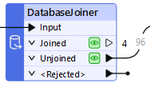
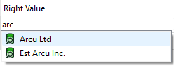
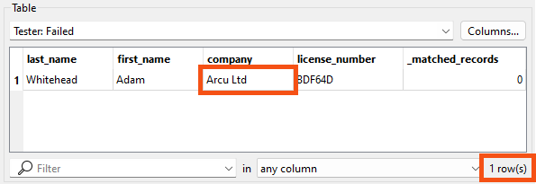
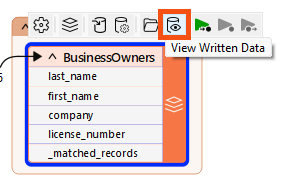
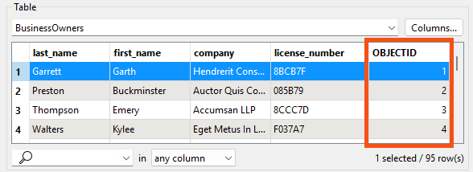

Learning Objectives
After completing this lesson, you’ll be able to:
- Understand how filtering lets you create multiple data streams in your workspaces.
- Filter your data using a Tester transformer.
- Choose an output port feature cache to inspect.
Resources
- Starting workspace
- C:\FMEData\Workspaces\IntegrateDataWithTheFMEPlatform\filter-data-by-attribute-values.fmw
- Complete workspace
- C:\FMEData\Workspaces\IntegrateDataWithTheFMEPlatform\filter-data-by-attribute-values-complete.fmw
- BusinessOwners.json
- C:\FMEData\Data\Planning\BusinessOwners.json
- revoked_licenses.csv
- C:\FMEData\Resources\IntegrateDataWithTheFMEPlatform\revoked_licenses.csv
Creating Multiple Streams of Data
FME workspaces send data from left to right across the canvas from reader feature types to writer feature types. The simplest workspace only has one “stream” of data: features are read in, all processed in the same way, and then written out. However, workspaces can have multiple data streams, splitting and merging features as required.
Did you find the correct transformer in the last exercise?
It was the DatabaseJoiner. Jennifer used it to join the features to the revoked_licenses table in the database, using the business license number as the key. The join created multiple streams in Jennifer's workspace when it split the features into Joined and Unjoined streams:

Jennifer connected the Unjoined port to the writer feature type since, in this case, she wanted to retain features without a revoked business license.

If you didn't guess correctly, try to add the DatabaseJoiner now and see if you can configure it properly. Read the hints in the last exercise and the transformer documentation if you need help. Part of learning to use new transformers is trying things out for yourself; hopefully, you can add it successfully. If you get stumped, load the starting workspace for this exercise and inspect the DatabaseJoiner's parameters. Ensure you understand how it is configured before proceeding.
Multiple Solutions
Like most things in FME, this challenge has multiple solutions. The DatabaseJoiner is the most efficient solution, but you might have found a different transformer.
FeatureMerger or FeatureJoiner
The best runner-up solution is a PostGIS or PostgreSQL reader and a joining transformer. The FeatureMerger and FeatureJoiner work in this case. You can read the revoked_licenses table, join it to the source data, and use the unjoined ports to get the valid licenses. That's not a wrong solution, but it doesn't meet the goal of doing this all without adding an additional reader.
AttributeFilter
You could add an AttributeFilter and manually set it to remove the four revoked license values from the data. However, this approach has two problems:
- If the underlying data changes, you must update the workspace. The filter values in the AttributeFilter are hard-coded. You would have to edit this transformer to update the workspace to filter out new revoked licenses, making the workspace inflexible.
- You must still add a PostGIS or PostgreSQL reader and read the revoked_licenses table. The goal here is not to have to add an additional reader.
- While it's not an issue in this scenario because the revoked_licenses table is small and only contains necessary data, using a reader would negatively affect workspace performance if you read from a larger table. FME would read the entire table and then look for matches in the source data. The DatabaseJoiner reads only the data required to conduct the join, making it a more efficient solution.
Tester or TestFilter
These filtering transformers have the same issue: if you want to use them alone to filter out the revoked licenses, you must hard-code the revoked license numbers into the test. There are more sustainable long-term solutions.
Filter Your Data Using a Tester
For the next step in her workspace, Jennifer wants to add another filter to her data before FME writes it out. She needs to remove Arcu Ltd's business license. She can use a Tester transformer to do that.
She opens the starting workspace in FME Workbench (2025.0 or later).
Jennifer adds a Tester connected to the DatabaseJoiner's Unjoined port and the BusinessOwners writer feature type using Quick Add:

We are filtering our features into two streams with the Tester. Other transformers with “Filter” in their name, such as the TestFilter, can route features into multiple streams based on various operations.
Before opening the Tester to configure it, Jennifer knows a trick to save time.
She clicks the Run button.
FME issues a warning dialog: Incomplete Transformers. This dialog appears because the Tester has been added to the Canvas but is not configured yet. However, as you will see in a moment, we have a good reason to run. She clicks OK.
After the workspace runs and FME creates feature caches, she double-clicks the Tester to open its Parameters dialog. The table here allows her to enter a logical test or series of tests against incoming features. It works a bit like an “if-then-else” statement in programming languages. If the feature meets the test(s) criteria, it comes out of the Passed port. If it does not, it comes out of the Failed port. The Tester filters data and allows for simple branching of your data integration workflow.
Jennifer sets up her Tester as follows:
| Logic |
Left Value |
Operator |
Right Value
|
| NOT |
company |
= |
Arcu Ltd |
The reason she ran her workspace before configuring the Tester becomes apparent when she enters the value for Right Value. If the Tester has a feature cache for the features entering the transformer, she can search the Cached Values to help her choose the right one. As she types "arc" into the field, a list of values to choose from shows up:

She can click Arc Ltd to enter it or use the arrow keys and Enter.
You can browse a complete list of values by clicking the downward pointing arrow and choosing Cached Values.

This feature is available in many transformers where you set values or construct tests, e.g., the AttributeManager, AttributeCreator, and TestFilter.
If you don't see values here, ensure you have both:
- Connected the DatabaseJoiner's Unjoined port to the Tester's Input port
- Run the workspace to get a feature cache on the DatabaseJoiner
These settings do the following: “For each feature being read by the Tester, if it does NOT have the value Arcu Ltd for the attribute 'company', it passes. Otherwise, it fails.” This test accomplishes our goal of sending that specific license to the Failed port.
We used the NOT Logic operator in this example. You can combine different Logic operators like OR or AND for more complex tests.
See the Tester documentation for more information.
Jennifer uses Run to This on the Tester and sees 95 results exit the Passed port and one exit the Failed port.
Inspect Your Filtered Data
Jennifer wants to inspect the Tester to ensure the correct features are filtered out.
She notices an FME behavior that is worth noting. When she clicks the Tester to select it, the Tester's Passed port feature cache appears in Visual Preview. This is because she has Toggle Automatic Inspect on Selection enabled (button in the top left corner of Visual Preview). She notes that Visual Preview always shows the top port with a cache when inspecting data this way.
In order to see the data she filtered out instead, she clicks the Tester's Failed feature cache. She sees Visual Preview’s Table View reporting in the bottom-right corner that one row is displayed. She verifies the company name is Arcu Ltd:

Inspect Final Results
Now that her workspace is complete, Jennifer turns off feature caching from the toolbar (Run > uncheck Enable Feature Caching) and then clicks Run. Her entire workspace runs successfully.
Then she clicks the BusinessOwners writer feature type to select it and clicks View Written Data.

This shows the 95 valid records that were written to this feature class. FME automatically added the required OBJECTID column to the data as required by the geodatabase format.

Jennifer clicks one of the writer feature types and then Open Containing Folder, viewing the geodatabase in her file browser. She can open the geodatabase in ArcGIS Pro from there.
Exercise
Jennifer notices a problem. There is now a _matched_records attribute on her features. She doesn't want this to be written to the final data.
Follow along with Jennifer’s steps above, and then use one of the techniques covered earlier in the course to ensure that _matched_records is not written. You have a few options:
- Use the AttributeManager after the DatabaseJoiner and remove _matched_records
- You'll also have to update the DatabaseJoiner because the attribute names it uses will have changed
- Switch the BusinessOwners writer feature type Attribute Definition mode back to Manual, and then remove _matched_records
- Use an AttributeRemover transformer before writing to remove _matched_records
For an optional extra challenge, find and add a transformer to order features alphabetically by the value of last_name.